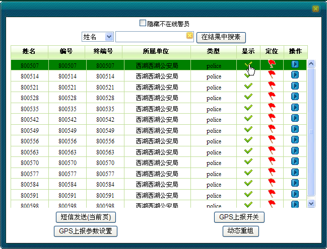
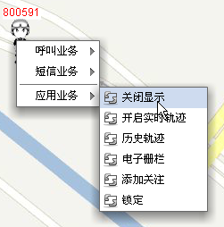
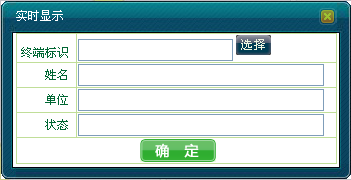
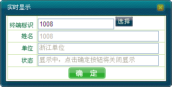

调度员可以控制是否进行移动用户的实时位置显示。
如果关闭实时显示，则从地图上移除该移动用户的图标及信息；如果打开实时显示，则在收到移动用户位置信息时，将在地图上显示该移动用户的图标及相应信息。
同样，调度员也可通过用户成员列表、地图右键操作以及呼叫面板来设置是否开启用户实时位置显示功能。而且，实时显示功能的开启关闭也可通过这三种方式可交叉操作。
1）可以通过查找用户、成员树、或者框选用户三种方式，弹出“移动用户列表”对话框。
2）在移动用户列表右侧“显示”栏下，单击勾选，则在地图上开启该用户的实时显示。下图1以框选为例。

图1. 移动用户列表开启显示
3）取消勾选，则关闭该用户的实时位置显示功能。
若某移动用户在地图上已显示，则可通过地图右键操作关闭显示。
1）在地图上选中移动用户。
2）右键单击［应用业务/关闭显示］，如下图2所示。

图2. 右键关闭显示
3）关闭显示后，此用户在地图上不再显示。
4）调度员可查找该用户，在用户列表上把这个用户的显示状态选上，则又可以开启该用户在地图上的实时显示。
调度员也可在［调度功能/呼叫面板］上开启或关闭实时显示功能，具体操作步骤如下：
1）在系统操作菜单栏中单击［调度功能/呼叫面板］，弹出“呼叫面板”对话框。
2）单击“应用业务”模块中的“实时显示”，弹出“实时显示”对话框，如下图3所示。

图3. 实时显示对话框
3）输入终端标识号或者单击右侧＜选择＞添加要开启或关闭的移动用户，此时，在“状态”属性中户显示当前该用户的显示状态，如下图4所示。

图4. 用户显示状态
4）若状态为“显示中”，则单击＜确定＞将关闭该用户在地图上的显示。若状态为“关闭显示中”，则单击＜确定＞将开启该用户在地图上的显示功能。
 说明：
说明：
若用户当前经纬度为0或者未配置，并且当前状态为隐藏，则开启实时显示功能后，当该用户有正确的经纬度上报时，其将会在地图上实时显示，否则，该用户不在地图上显示。
Copyright © 2012 Eastcom, Inc. All rights reserved. |
||